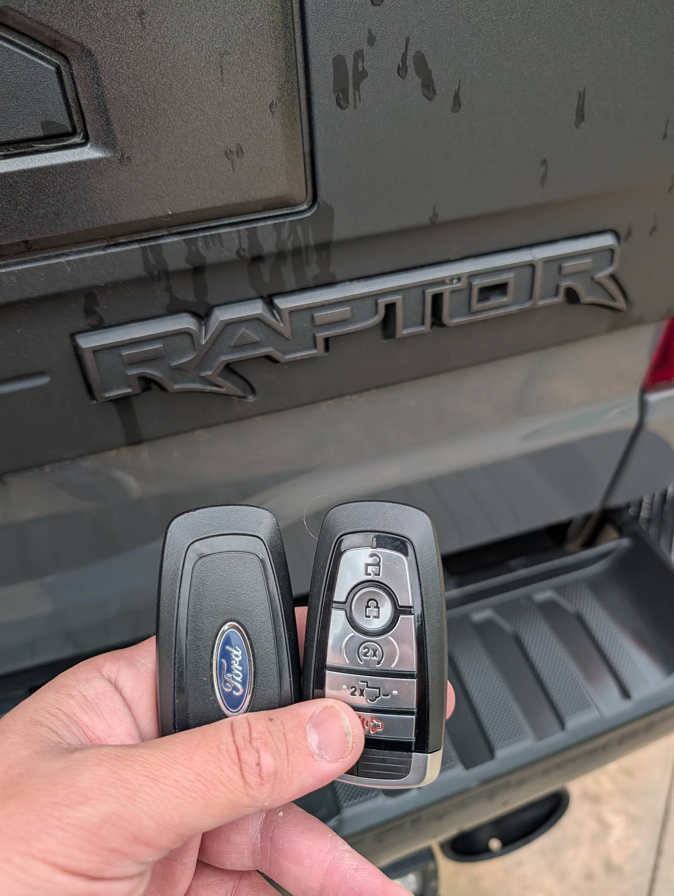
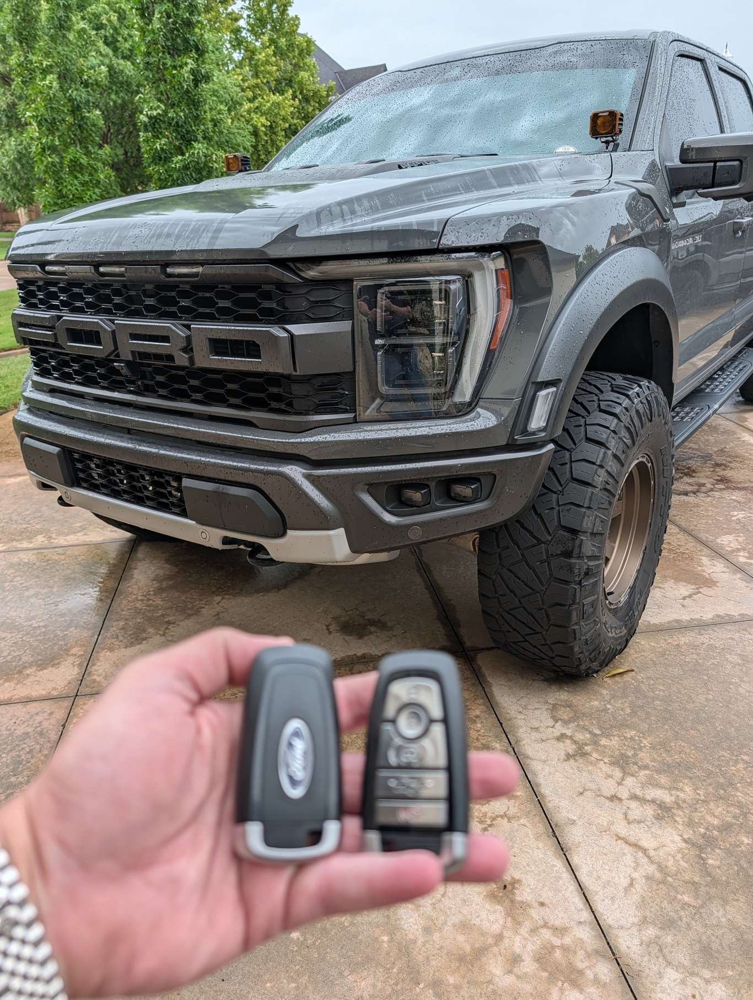

How Much Does It Cost to Replace a Car Key in Oklahoma City?

Want your exact price before anyone is dispatched? We're a local, licensed mobile locksmith and we come to you.
Call Now — (405) 870-5397Here's the straight answer most sites bury: in the Oklahoma City area, a basic metal key usually runs about $50–$100, a transponder (chip) key about $120–$250, and a smart push-to-start fob about $200–$450 — sometimes more on luxury vehicles. What you pay comes down mostly to your key type and your vehicle. The difference with us is simple: you get your exact price up front, on the phone, before we ever dispatch a tech. No "we'll see when we get there."
Let's break down where those numbers come from, so you know what you're paying for.
The three kinds of car keys — and what each costs
Almost every car key falls into one of three buckets, and the bucket is the single biggest factor in your price.
Basic metal key — about $50–$100. Older vehicles (roughly pre-2000s, and some trucks) use a plain cut metal key with no chip. These are the cheapest to make because there's no programming involved — we just cut the key. If you only need a spare of one you already have, this is the low end.
Transponder (chip) key — about $120–$250. Most cars from the mid-1990s on have a tiny chip in the key that "talks" to your car's immobilizer. The car won't start unless it recognizes that chip — which is why a hardware-store copy of a chip key won't work. We cut the key and program the chip to your vehicle, which is where the added cost comes from.
Smart key / push-to-start fob — about $200–$450+. Keyless, proximity, push-to-start systems are the most advanced — and the most expensive to replace. They take specialized equipment, secure programming, and more time to sync with your car. Luxury and newer models sit at the top of the range. For these, we also offer interest-free payment plans so a fob replacement doesn't have to hit all at once.

Why two people pay very different prices
Even for the "same" job, a few things move the number:
- Your key type — the buckets above. This is the big one.
- Make, model, and year — newer and luxury vehicles use higher-security keys that cost more to program.
- Newer vehicles that need dealer-level software — a lot of late-model cars lock their key programming behind secure, manufacturer-controlled access. To add a key, we have to buy that access from the automaker — a paid software license or per-vehicle security token — on top of the extra time and specialized tools the job takes. That's a real cost the manufacturer charges us, so these vehicles land at the top of the range, and sometimes above it. We'll tell you on the phone if your vehicle is one of these.
- Distance / where you are — we come to you, so how far you are from us factors in. A job across the metro carries a little more travel than one around the corner. It's built into the price you're quoted, so there's still no surprise.
- Spare vs. all-keys-lost — making a copy when you still have a working key is far cheaper than originating a brand-new key when every key is lost, which takes more work.
- Timing — overnight and holiday calls can carry an emergency fee. Either way, you'll hear the price before we roll.
Locksmith vs. the dealership
For most vehicles, a mobile locksmith is faster and cheaper than the dealer. The dealership route usually means towing your car in, waiting days for a key to come from the manufacturer, and paying dealer rates. We come to you — at home, at work, or in a parking lot — cut and program the key on the spot, and you skip the tow bill entirely.
The cheapest car key is the spare you make today
Here's the money-saving tip nobody tells you: the time to deal with car keys is before you're standing in a parking lot with none. A duplicate made while you still have a working key is a fraction of the cost of an all-keys-lost replacement. If you're down to your last key, get a spare cut now — it's the cheapest insurance there is.
And if a price sounds too cheap to be real…
It is. The "$19 car key" ad is the classic bait-and-switch — the rock-bottom number gets someone to your car, then the price climbs once they're there. An honest locksmith gives you a real number up front and sticks to it.
Our promise: the price before the work
You'll never get a surprise from us. We quote your exact price on the phone, and that's what you pay — you'll know the full cost before we ever leave the shop. We cover the OKC metro — OKC, Edmond, Norman, Moore, Yukon, Warr Acres and around — and we come to you.
Need a key made? Call (405) 870-5397 for your exact price.
Call Now — (405) 870-5397Frequently Asked Questions
How much does it cost to replace a car key in Oklahoma City?
In the OKC area, expect roughly $50–$100 for a basic metal key, $120–$250 for a transponder (chip) key, and $200–$450 or more for a smart push-to-start fob. Your exact price depends on your key type and vehicle — and you'll get that number from us up front before we dispatch.
Is a locksmith cheaper than the dealership for a car key?
Usually, yes — for most vehicles a mobile locksmith is both cheaper and faster. You skip the tow, skip the multi-day wait, and we come to you.
Why is my car key so expensive to replace?
Modern keys carry a security chip (and smart keys, a full electronics package) that has to be programmed to your specific car with specialized equipment. You're not just paying for cut metal — you're paying for the programming and the security that keeps your car from being stolen. On a lot of newer vehicles, the manufacturer locks that programming behind paid, dealer-level software — we have to buy a security license or token from the automaker just to add your key — and that real cost, plus the extra time and tools, pushes the price toward the top of the range.
Can you make a cheaper key if I still have a working one?
Yes — duplicating a key while you still have one is far cheaper than replacing a key when all of them are lost. If you're down to your last key, getting a spare now will save you money later.
Do you charge more for nights or weekends?
After-hours calls can include an emergency fee, but you'll always hear your full price up front — no surprises when we arrive.